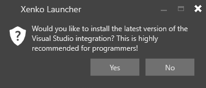
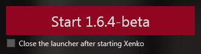

Stride Launcher
初級
Stride Launcher を使用すると、異なるバージョンの Stride をインストール、管理、実行できます。
最新バージョンの Stride をインストールする
Stride がまだインストールされていない場合は、Stride Launcher で最新バージョンのインストールを促されます。

［Switch/update version］セクション (B) で、他のバージョンの Stride をインストールできます。そのためには、リストのバージョンの横にある［install］アイコンをクリックします。
Stride の Visual Studio 拡張機能をインストールする
最新バージョンの Stride のインストールを選択すると、Visual Studio 拡張機能をインストールするかどうかの確認を求められます。

Visual Studio 拡張機能を使用すると、Visual Studio から直接シェーダーを編集でき、構文の強調表示、検証でのライブ コード分析、エラー チェック、ナビゲーション (定義へのジャンプ) などが提供されます。拡張機能のインストールは必須ではありませんが、お勧めします。
必要に応じて Visual Studio 拡張機能をインストールまたは再インストールするには、Stride Launcher の［Reinstall］ボタンをクリックします。

Stride のバージョンを切り替える
実行する Stride のバージョンを選択するには、［Switch/update version］の一覧で選択します。
さまざまなバージョンの Stride を管理する
［Switch/update version］セクションで、複数のバージョンの Stride をインストールおよびアンインストールできます。

古いプロジェクトの作業には、古いバージョンの Stride の使用が必要になる場合があります。新しいバージョンの Stride には、古いプロジェクトをアップグレードする必要がある変更が含まれる可能性があります。
バージョン番号は、2 つの値で構成されています。最初の番号はメジャー バージョンで、次の番号はマイナー バージョンです。
メジャー更新では大きな変更が追加され、使用するにはプロジェクトの更新が必要になる場合があります。マイナー更新には互換性がなくなるような変更は含まれないので、既存のプロジェクトで使用しても安全です。
特定のバージョンのリリース ノートを見るには、バージョン名の隣にあるノート アイコンをクリックします (A)。
特定のバージョンをインストールするには、バージョン名の隣の［Download and install］アイコンを クリックします (D)。
Note
前のマイナー バージョンに戻すことはできません。たとえば、Stride 1.9 と 1.8 の両方を同じ環境にインストールすることはできますが、Stride 1.9.2 を Stride 1.9.1 に戻すことはできません。
Game Studio を開始する
- ［Switch/update version］で、使用する Stride のバージョンを選択します。
［Start］ボタンでバージョン番号が更新されます。

- ［Start］をクリックして Game Studio を起動します。
最近使用したプロジェクト

［Projects］セクションには、最近使用したプロジェクトが表示されます。プロジェクトを開くには、クリックします。
新しいバージョンの Stride でプロジェクトを開く
各プロジェクト ボタンの右上には、そのプロジェクトが作成された Stride のバージョンが表示されます (B)。
プロジェクトをさらに新しいバージョンの Stride で開くには:
プロジェクト ボタンで、右下のアップグレード アイコンをクリックします (D)。
プロジェクトを開く Stride のバージョンを選択します。開くときに、プロジェクトのアップグレードの確認を求められます。
Note
新しいバージョンの Stride を使用するようにプロジェクトを更新すると、プロジェクトを動作させるために手動での変更が必要になる場合があります。アップグレードする前に、プロジェクトとそのすべての関連ファイルのバックアップを必ず行ってください。